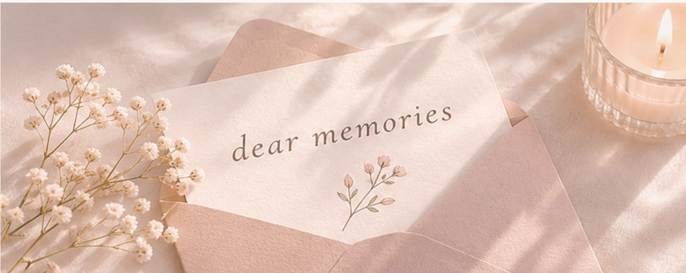
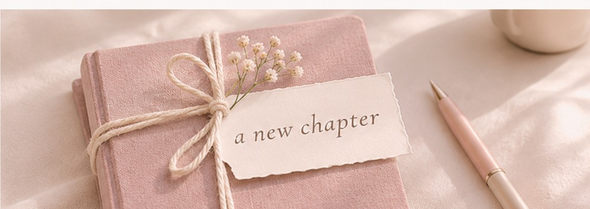

Kalau Waktu Bisa Diulang, Apakah Aku Akan Memilih Jalan yang Sama?
Jika waktu dapat diulang, apakah kita akan tetap memilih jalan yang sama? Sebuah cerita tentang pilihan, keraguan, dan harapan akan akhir yang bahagia.
Read the story →A little space for stories & memories
Sebuah ruang kecil untuk menyimpan cerita, pengalaman, pikiran, dan hal-hal sederhana yang ingin dikenang kembali.
Explore the journal →

Kalau ditanya dulu apa salah satu cita-citaku, yang paling kuingat adalah menjadi seorang penulis. Aku suka menulis cerita pendek, walaupun terkadang aku tidak percaya diri dengan hasilnya.
Waktu berjalan dan umur pun bertambah. Seiring dengan itu, mungkin cita-cita tersebut mulai pudar karena kesibukan dan padatnya pekerjaan. Mungkin agak terlambat untuk memulainya kembali, tetapi aku yakin keputusan ini bisa menjadi awal yang baik.
Read the story →Jika waktu dapat diulang, apakah kita akan tetap memilih jalan yang sama? Sebuah cerita tentang pilihan, keraguan, dan harapan akan akhir yang bahagia.
Read the story →Catatan sederhana tentang hari-hari yang mungkin terasa biasa, tetapi berarti.
Pikiran, pelajaran, dan pengingat kecil untuk diri sendiri.
Terima kasih sudah mampir ke ruang kecil ini. Di sini, aku ingin berbagi cerita dan menyimpan potongan kehidupan—agar suatu hari nanti, semuanya bisa dibaca kembali.